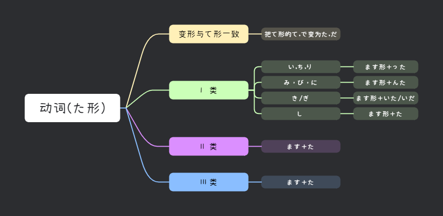

📖 みんなの日本語 第十九課
た形・経験・変化｜たことがある・たり～たりする・くなる/になる
文法 ①
动词た形
动词た形的变化规则（与て形类似，将「て」→「た」、「で」→「だ」）：
| 动词类型 | て形 → た形 变化规则 | 例子 |
|---|---|---|
| Ⅰ类（い・ち・り） | って → った | 買って→買った・待って→待った・帰って→帰った |
| Ⅰ类（み・に・び） | んで → んだ | 読んで→読んだ・死んで→死んだ・遊んで→遊んだ |
| Ⅰ类（き） | いて → いた | 書いて→書いた |
| Ⅰ类（ぎ） | いで → いだ | 泳いで→泳いだ |
| Ⅰ类（し） | して → した | 話して→話した |
| Ⅱ类 | て → た | 食べて→食べた・見て→見た |
| Ⅲ类 | 来て→来た・して→した | 来た・勉強した |

💡 た形用来表示过去/完成，与て形变化规则完全对应（て→た）。
文法 ②
动词た形 + ことがあります
Vたことがあります
意义：表示过去的经历/体验，“做过……（有过……的经验）”。
馬に乗ったことがあります。→ 我骑过马。
💡 与单纯过去式的区别：过去式强调“某次做了某事”；「たことがある」强调“有没有这种经历”。
文法 ③
动词た形り、动词た形り + します
Vたり、Vたりします
意义：列举若干代表性动作（并非全部），相当于“做做……看看……等等”。
日曜日はテニスをしたり、映画を見たりします。→ 星期天打打网球、看看电影。
日曜日はテニスをしたり、映画を見たりしました。→ 星期天打了网球、看了电影。
💡 与第16课「て形」的区别：たり不强调动作先后，只是举例列举。
文法 ④
い形容词 / な形容词 / 名词 + なります
い形容詞(去い) + くなります
な形容詞(去な) + になります
名词 + になります
な形容詞(去な) + になります
名词 + になります
意义：表示状态变化，“变得……”。
寒くなります。→ 变冷。
元気になります。→ 恢复健康。
25歳になります。→ 到25岁。
📌 第十九課 キーワード
た形たことがある
たり～たりくなるになる
📖 语法核心：た形变化・经历・举例列举・状态变化